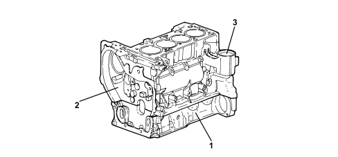

INTRODUCTION - ENGINE CRANKCASE
- Path
- Descriptions > 10 ENGINE > 1012 ENGINE BLOCK > INTRODUCTION - ENGINE CRANKCASE
- Kind
- system description
- Applies to
- engines: 2.2 JTS; all production periods
- Interactive page
- https://sloeber94.github.io/elrnDB-aBrrSpdr/en/#/946001159
Applies to: engines: 2.2 JTS; all production periods
SPECIFICATIONS
It is made entirely from aluminium alloy, comprising two sections, the actual cylinder block/crankcase and the base plate.
The crankshaft is supported by five main bearings.
The crankcase also houses two counter-rotating shafts that are mounted on a central bush and a ball bearing at the front and the rear.
Special channels in the crankcase walls carry coolant and lubrication fluid.
The lower part of each cylinder contains an oil jet that sprays oil on the piston crown.

1. Base plate
2. Cylinder block/crankcase
3. Engine oil filter cartridge and water-oil heat exchanger support